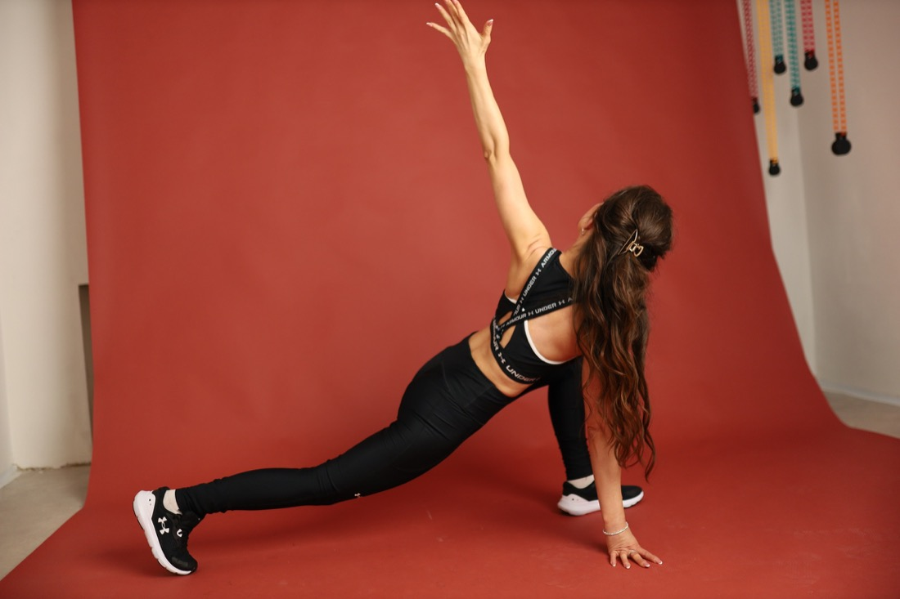

Окреме відео на кожен день
У групі є день 1, день 2, день 3 і так далі: учасниця відкриває потрібний день, дивиться відео, лекцію або завдання і займається у своєму темпі.
21 день + 9 днів запасу
Впровадь звичку тренуватись, тягнутись і доглядати за тілом у закритій Telegram-групі, де Катя щодня веде, мотивує і направляє особисто.

why it matters
Целюліт не вирішується одним масажем або випадковими вправами. Тілу потрібна система: рух, кровообіг, лімфодренаж, тонус м'язів, догляд за шкірою і регулярність.
Програма створена як м'який, але структурний план: 21 основний день занять і ще 9 днів запасу. Катя враховує жіночий цикл, менструацію, втому, поїздки й те, що тілу іноді потрібен день паузи.
telegram group
У групі є день 1, день 2, день 3 і так далі: учасниця відкриває потрібний день, дивиться відео, лекцію або завдання і займається у своєму темпі.
Окрім тренувань, є вступний урок, доглядові рекомендації, бонусні медитації, відповіді на питання, фото-звіти і простір для вражень.
Катя не просто віддає записи: вона підтримує, направляє, реагує на звіти і допомагає не зійти з дистанції, коли пропадає мотивація.
Хочеться більше гладкості, пружності й тонусу в зоні стегон, сідниць і ніг.
Потрібно додати рух, дихання і лімфодренажні практики без виснаження.
Є тренування “час від часу”, але хочеться зрозумілої послідовності й ритму.
Не тільки візуального результату, а й відчуття живого, рухливого, включеного тіла.
inside
Робота з сідницями, стегнами, корпусом і руками у комфортному домашньому форматі.
М'які комплекси, що допомагають тілу відчути легкість і кращу циркуляцію.
Практики на плавність руху, тазостегнові, спину і здорову амплітуду.
Прості ритуали для проблемних зон, які легко повторювати без складного обладнання.
Без крайнощів: що додати, що зменшити і як підтримати якість шкіри звичками.
Особиста мотивація, напрямок по днях і можливість поставити питання у групі.
program
Кожен день має окремий матеріал у Telegram: тренування, лекцію, завдання, відеорекомендацію або підтримуючий блок. Якщо випадає день через місячні, самопочуття чи справи, є запас часу і можна спокійно повернутися.

coach
Ціль програми не “переробити себе”, а дати тілу систему, у якій воно поступово стає більш включеним, сильним, рухливим і доглянутим.
booking
Напишіть Катерині, щоб уточнити найближчий старт, формат участі та актуальну вартість. Після запису ви потрапляєте в закриту Telegram-групу з матеріалами на кожен день.